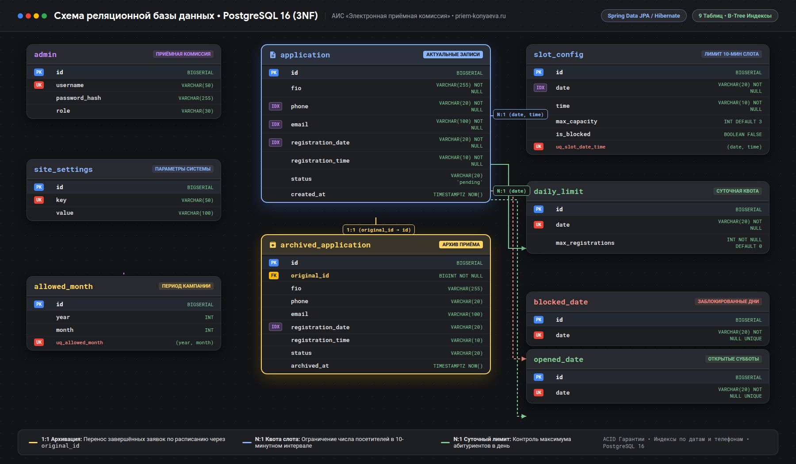
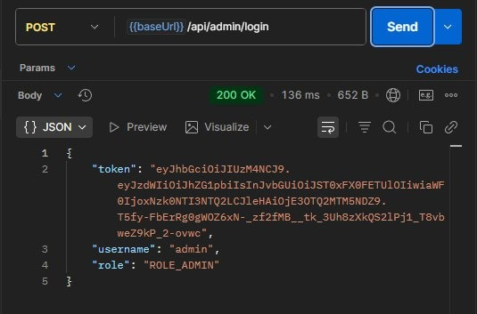
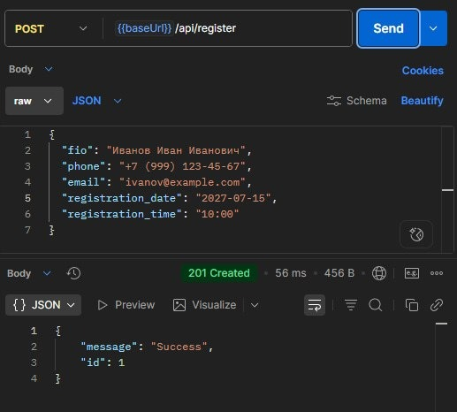
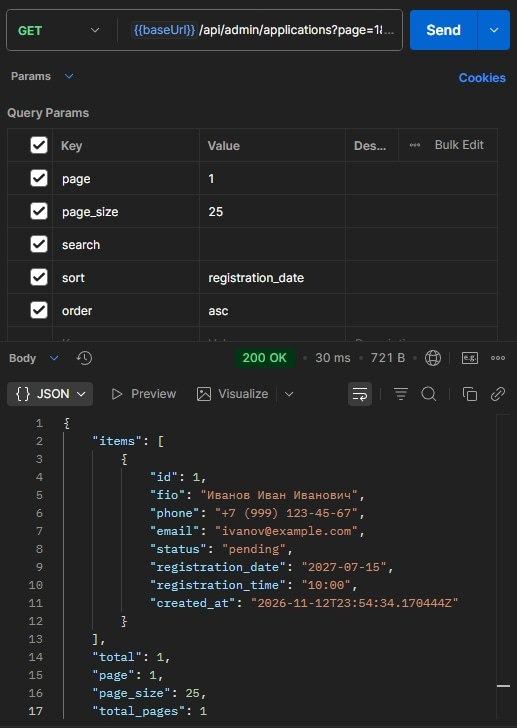
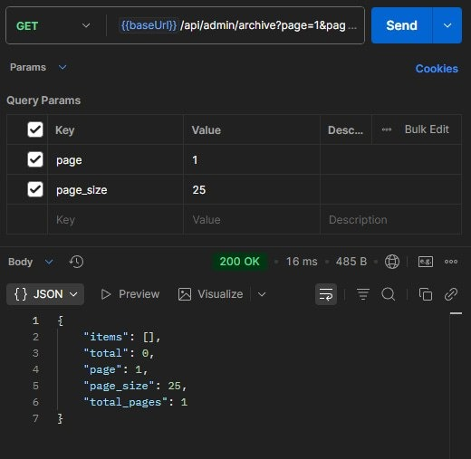

Перевод серверного ядра действующего проекта priem-konyaeva.ru с Python (Flask/Gunicorn) на высокопроизводительный стек Java 21 LTS + Spring Boot 3 + PostgreSQL 16
priem-konyaeva.ru и обслуживает реальный поток абитуриентов.openpyxl) приводят к ощутимым задержкам отклика (100–150+ мс).mvn compile, гарантируя нулевой процент runtime-падений.| Пользователь | Роль в системе | Доступные действия и эндпоинты | Способ авторизации |
|---|---|---|---|
|
Абитуриент / Родители
Посетители сайта priem-konyaeva.ru
|
ROLE_APPLICANT |
• Просмотр календаря свободных дат и 10-минутных интервалов: GET /api/dates-status, GET /api/slots-status/{date}• Электронная подача заявки на приём: POST /api/register• Проверка статуса записи по номеру телефона: GET /api/track• Просмотр разрешённых месяцев кампании: GET /api/allowed-months
|
Публичный доступ (Без пароля) |
|
Приёмная комиссия колледжа
Сотрудники приёмной комиссии
|
ROLE_ADMIN |
• Аутентификация сотрудника: POST /api/admin/login• Журнал записей: пагинация, поиск по ФИО/телефону, смена статусов заявления • Управление слотами: изменение лимита кабинета ( max_capacity), блокировка слота• Управление календарем: блокировка дат ( blocked_dates), открытые субботы, суточные квоты• Экспорт отчётности: выгрузка ведомостей в Microsoft Excel (.xlsx) • Управление архивом: просмотр исторических данных и ручной запуск архивации |
JWT Bearer Token (24h) + BCrypt |
max_capacity (по умолчанию 3-5 абитуриентов), что предотвращает овербукинг и гарантирует отсутствие очередей у кабинета.
advance_hours (по умолчанию 24 часа). Это позволяет комиссии заранее распечатать ведомости и сформировать папки личных дел на следующий рабочий день.
daily_limits), заблокировать день в случае санитарной обработки (blocked_dates) или открыть рабочую субботу (opened_dates).
@Scheduled, каждые 5 минут автоматически архивирующий записи прошедших дней.

| Критерий архитектуры | Текущий бэкенд на Python (Flask) | Новый бэкенд на Java 21 (Spring Boot 3) | Выигрыш для колледжа |
|---|---|---|---|
| Многопоточность и GIL | Блокировка GIL (Global Interpreter Lock). Для параллелизма Gunicorn запускает отдельные процессы ОС по 120 МБ каждый. | Настоящая многопоточность JVM: Встроенный пул потоков Tomcat + пул соединений HikariCP в едином адресном пространстве. | В 3 раза меньше RAM |
| Время отклика API (Latency) | Интерпретируемый байткод Python. Среднее время обработки сложного запроса: 100–150 мс. | JIT-компиляция HotSpot: Байткод компилируется в машинный код процессора. Отклик API: всего 16–30 мс! | В 4–5 раз быстрее |
| Генерация ведомостей Excel |
Библиотека openpyxl строит полное DOM-дерево документа в оперативной памяти, вызывая лаги сервера.
|
Библиотека Apache POI со стриминговой генерацией XSSF формирует Excel мгновенно даже при тысячах записей. | Без зависаний сервера |
| Надёжность типов (Type Safety) | Динамическая типизация. Ошибки (NoneType, KeyError) могут проявиться только в runtime при живом обращении. |
Строгая статическая типизация: Все типы данных, DTO-контракты и JPQL-запросы проверяются ещё при сборке mvn compile.
|
Нулевой риск падений |

Принимает учётные данные сотрудника в JSON-формате (LoginRequest). Сервер сверяет пароль с базой данных через криптографический алгоритм BCryptPasswordEncoder с солью.
Authorization: Bearer <token>."role": "ROLE_ADMIN" для полного доступа к управлению приёмом.
Основной публичный метод системы. Принимает ФИО абитуриента, номер телефона, email, желаемую дату приёма и точный 10-минутный квант времени (RegisterRequest).
blocked_dates и соответствия суточной квоте daily_limit."id": 1 для последующего трекинга.
Предоставляет сотрудникам актуальный список записанных абитуриентов с поддержкой серверной пагинации (page=1&page_size=25) и сортировки по дате и времени.
pending ➔ confirmed ➔ completed).
Обеспечивает доступ к историческим заявлениям прошлых периодов. Записи переносятся в архив планировщиком @Scheduled автоматически после наступления даты приёма.
original_id.application содержит только актуальные записи текущих суток, что ускоряет поиск в разы.POST /api/admin/archive/run для экстренного архивирования комиссией.